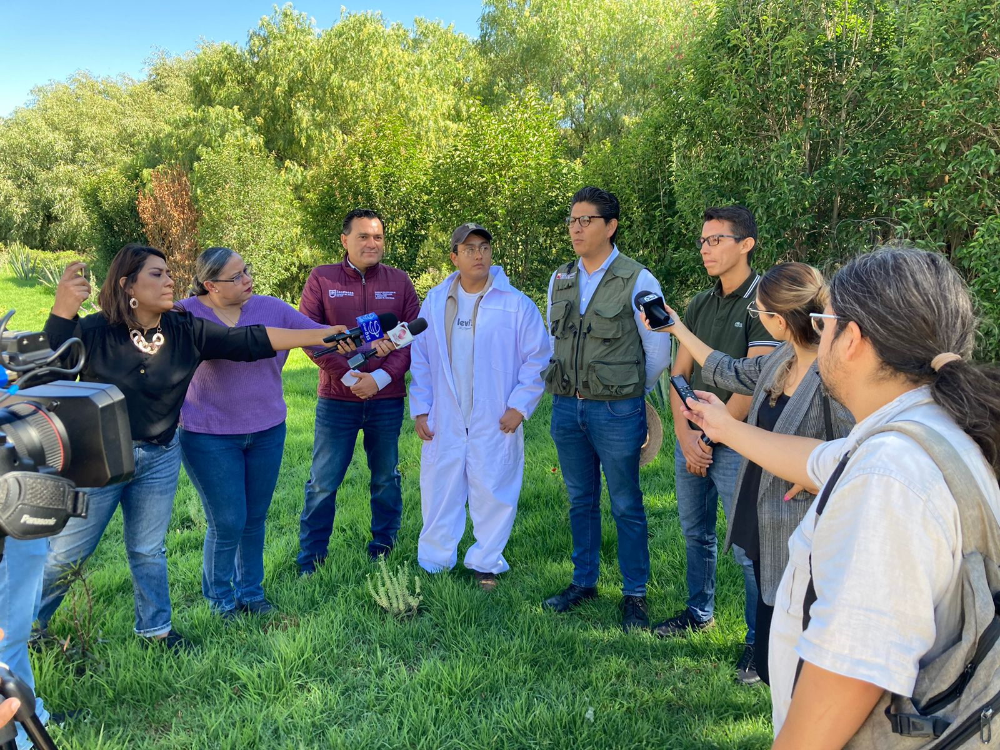

En el tema de los recursos naturales, de acuerdo con el INEGI/Semarnat, Zacatecas ocupa 3.84% de la superficie del país. El 73% de la entidad presenta clima seco y semiseco, el 17% clima templado subhúmedo y se localiza hacia el oeste del estado; el 6% es muy seco y se ubica en las regiones norte y noreste, el 4% restante con clima cálido subhúmedo y se encuentra hacia el sur y suroeste de la entidad. Asimismo, el estado se divide en 58 municipios con una superficie de 74,502 km2 . Tiene 4,672 localidades y 34 acuíferos, 8 con disponibilidad publicada en el DOF.
Su fauna está constituida por el coyote, pecarí, víbora de cascabel, liebre, conejo, zorra, carpintero desértico, lince, puma y rata canguro en el desierto y semidesierto. En el bosque de pino y encino se encuentran el trogón,zacatonero rayado, la ardilla, la musaraña y el venado. En zonas de pastizal, la tuza, la zorra, el tlalcoyote, la musaraña, la víbora cascabel chilladora y la lagartija de collar, así como, animales en peligro de extinción como el berrendo y el perrito de la pradera.
Zacatecas es un territorio poco explorado, no sólo en términos de diversidad biológica, sino también de diversidad cultural y es necesario crear esfuerzos por revertir la tendencia existente, para ello, el jardín etnobiológico tendrá tres grandes ejes basados en las principales actividades económicas primarias del estado: la ganadería, la agricultura y la caza-recolección.
En este sentido, el Gobierno del Estado de Zacatecas ha determinado como objetivo general garantizar la protección del medio ambiente y el aprovechamiento racional de los recursos naturales, así como la gestión integral del recurso hídrico, promoviendo su uso de manera eficiente en el ámbito rural y urbano; por medio de la aplicación de la estrategia.la cual permea en promover la conservación, protección, restauración y aprovechamiento sustentable de los ecosistemas y su biodiversidad.
imagen
El Parque de Ciencia y Tecnología, denominado Quantum-Ciudad del Conocimiento, con una extensión de 38 hectáreas, el cual, junto con inversión privada y pública en su mayoría aportada por el Consejo Nacional de Ciencia y Tecnología, comenzó su construcción en el año 2015 y posteriormente fue inaugurado en 2018. Dicho Parque, cuenta en su primera etapa con ocho Centros de investigación y Desarrollo tecnológico en funcionamiento, otros dos en fase de construcción, y tres en proyecto ejecutivo. Sin embargo, al día de hoy el Parque de Ciencia y Tecnología no ha cumplido con su objetivo, ya que, de acuerdo a su Plan Maestro, dicho complejo incluye 3 etapas de su urbanización de la cual, solamente se ha entregado una; además como asignatura pendiente se encuentra la implementación de un proyecto para la conservación ambiental del sitio por medio de la creación del primer Jardín Etnobiológico en el estado de Zacatecas.
imagen
Es importante resaltar que para el establecimiento del Jardín Etnobiológico de Zacatecas, en su primer etapa el Consejo Zacatecano de Ciencia y Tecnología, cuenta con un bien inmueble donado, en sus tres etapas de construcción y conservación del medio ambiente, del denominado Campus de Innovación Tecnológica (CIT) o con su denominación comercial Quantum Ciudad del Conocimiento, Fracción de la Parcela número 564 Z5 P1/1, del Ejido La Escondida, Municipio de Zacatecas, Estado de Zacatecas, con una superficie de 31-79-25.48 (treinta y un hectáreas, sesenta y nueve áreas y veinticinco punto cuarenta y ocho centiáreas).
Como parte del diagnóstico del Consejo Nacional de Ciencia y Tecnología ha detectado la importancia para la promoción, generación, consolidación y recuperación de espacios para su protección, donde a su vez se promueva un intercambio de conocimiento que contribuya al fortalecimiento de las comunidades que le han dado origen y lo resguardan. Para lo cual ha generado la Demanda específica cuya finalidad se encamina a contribuir a la conservación de la flora y fauna vivas locales, a la recuperación y visibilización del conocimiento etnobiológico local y regional relacionado con la riqueza biocultural de nuestro país e impulsar la difusión y el acceso universal del conocimiento.
imagen
La creación del jardín Etnobiológico de Zacatecas se alinea a los propósitos de la Agenda 2030 de la ONU, y a los diagnósticos de las problemáticas federales y estatales plasmadas en el Plan Nacional de Desarrollo 2019-2024 publicado en el Diario Oficial de la Federación el 12 de julio de 2019 y al Plan Estatal de Desarrollo de Zacatecas 2022-2027, para impulsar el acceso universal del conocimiento de las humanidades, las ciencias y promover la conservación.
El proyecto para el establecimiento del Jardín Etnobiológico de Zacatecas, conjuntará comunidades rurales, asociaciones civiles, instituciones de gobierno, de educación básica, media superior y superior, centros de investigación a través de diversos programas que oferta el COZCyT: visitas escolares a comunidades (programa ciencia itinerante), visitas escolares al jardín etnobiológico, foros de divulgación en el Centro de Comunicación y Divulgación de la Ciencia (CECODIC). Dicho espacio se integrará a la Red Nacional de Jardines Etnobiológicos auspiciada por el Consejo Nacional de Ciencia y Tecnología.
Para su operación y puesta en marcha, el Jardín Etnobiológico de Zacatecas (JEZ) por sus características de riqueza en especies de flora y fauna nativas con la que actualmente cuenta, y sumando a ello el objetivo de la Demanda Específica, a partir de la conceptualización y un prediseño arquitectónico, el grupo de trabajo responsable y un despacho de arquitectura de apoyo, estará afinando y detallando las características requeridas para cada espacio considerando un proyecto paisajístico que proporcione el diseño de áreas y espacios donde se establecerán las colecciones botánicas de interés etnobiológico en su primera etapa, para posteriormente lanzar la licitación del proyecto para el inicio de la construcción del Jardín Etnobiológico de Zacatecas.
El producto obtenido en esta etapa será un Proyecto Ejecutivo para la construcción del JEZ, que incluya manejo del paisaje, manejo de tierras, manejo de residuos, programa de emergencias y programa de prevención de accidentes, permisos federales, estatales y municipales, con base a los ecosistemas de Zacatecas y a su inventario forestal, los senderos y espacios etnobiológicos, obra civil, planos civiles, eléctricos, hidráulicos, en el cual debe incluir, exposición de insumos, programa de obra y los planos que sean requeridos para la correcta construcción y adecuación.
imagen
De acuerdo a la Secretaría de Medio Ambiente y Recursos Naturales las Unidades de Manejo Ambiental (UMA) tienen como objetivo general la conservación del hábitat natural, poblaciones y ejemplares de especies silvestres. Pueden tener objetivos específicos de restauración, protección, mantenimiento, recuperación, reproducción, repoblación, reintroducción, investigación, rescate, resguardo, rehabilitación, exhibición, recreación, educación ambiental y aprovechamiento sustentable.
En este sentido las UMA surgen de la necesidad de contar con alternativas viables de desarrollo socioeconómico en México, promoviendo la diversificación de actividades productivas en el sector rural mediante el binomio “conservación-aprovechamiento sustentable” de la vida silvestre, a través del uso racional, planificado y ordenado de los recursos naturales y revirtiendo los procesos de deterioro ambiental.
Relacionado a ello, uno de los objetivos medulares del establecimiento y operación del Jardín Etnobiológico de Zacatecas (JEZ), es la colaboración con los sectores de la sociedad zacatecana, para el desarrollo de estrategias de conservación de la flora, fauna y de la riqueza biocultural del estado de Zacatecas, que favorezcan la participación activa de las comunidades locales, por lo que se gestionará la constitución de una Unidad de Manejo Ambiental con la finalidad de conservar el hábitat natural, poblaciones y ejemplares de especies silvestres existentes.